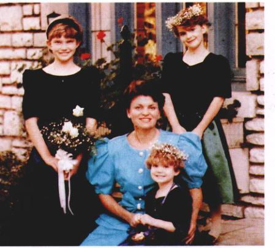
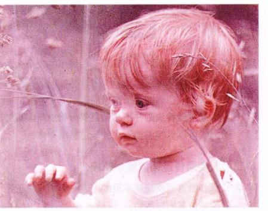
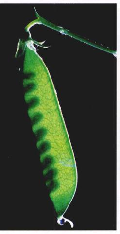
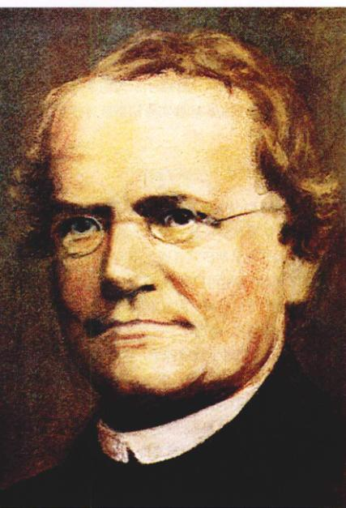
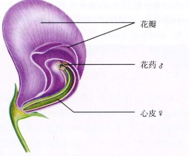
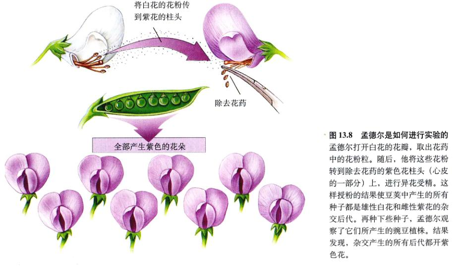
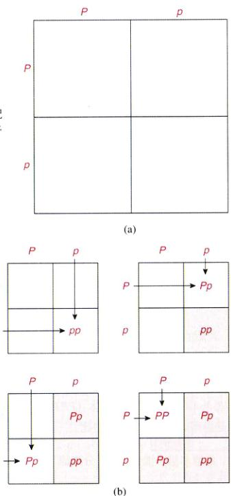
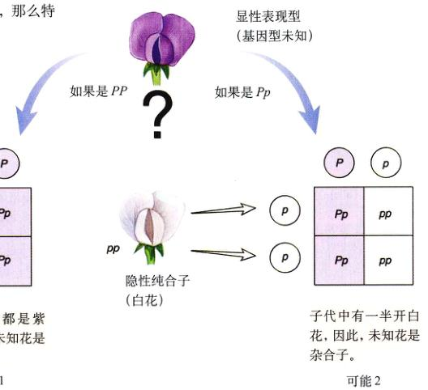
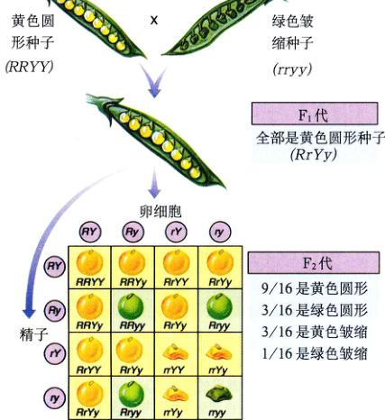
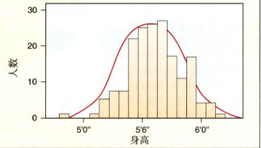

图 13.1 人类的外表彼此极不相同 我们之间的差异部分由遗传决定，部分是我们所处环境影响的结果。
每种生物都是地球上生命长期进化的产物。虽然所有生物都共享了进化的历程，但只有人类想知道导致他们起源的过程。尽管我们还远未弄清起源的全部问题，但已经知道了很多，就像部分完成的七巧板，边界已经排好，许多内部结构也逐渐清晰。在这一章里，我们将讨论其中的一个难题——遗传之谜。为什么世界各地的人们外表各不相同（图 13.1）？为什么家庭成员彼此之间比其他人更加相像？
早在有资料记载的时候，某些家族成员间非常相似的问题就被注意并讨论（图 13.2）。一些象族拥有众不同的特征，如欧洲哈布斯堡王族有凸出的下嘴唇，这可以从画像及公开的13世纪以来家族成员的描述中得到印证。其他特征就更加普遍，比如红发的父母会有同样是红发的孩子（图 13.3）。遗传的特征作为进化的基石，是本章中要讨论的问题。
图 13.2 遗传是家庭成员彼此相似的原因 家庭成员有很多的相似之处，这是遗传机制的一种视觉表现。这张相片是本书作者之一的约翰逊一家，图中有他的妻子和女儿。每个女儿都不相同，但她们很明显都和母亲相似。
在20世纪以前，对遗传的认识中有两个基本假设。第一个是遗传只发生在物种内部。在一个很长的时期内，人们相信可以通过不同物种间的杂交获得奇异的复合物种。克里特岛人神话中的牛头人，就是一个例子。长颈鹿是另一个例子，它的学名 Giraffa camelopardalis（鹿豹），表明人们认为它是骆驼和豹相互杂交的产物。自中世纪以来，人们发现这类极端的杂交不可能发生，并且遗传和变异只发生在某一物种的边界上，各个物种被认为自产生以来一直没有显著变化。
关于遗传的第二个早期假设是：性状是直接传递的。当变异从父母遗传给子代时，什么发生了传递？古希腊人认为，父母身体的要素直接传递给后代。希腊名医希波克拉底称这类生殖物质为“gonos”，意为种子。因此，子代畸形的四肢是父母畸形四肢那获得物质产生的。身体各部分的信息被认为是独立传递的，并且当父母各部分的遗传物质聚集起来时，一个小孩就产生了。
这一观点直到最近都占据着主导地位。如查尔斯·达尔文在1868年提出，所有的细胞和组织分泌微粒，或“胚芽”，来传递给子代，指导胚胎发育过程中相应各部分的生长。多数类似的遗传物质直接传递的假设认为，雄性和雌性的遗传物质在后代中相混合。因此红发和棕发的父母生出孩子的头发会呈略带红色的棕色，高矮不同的父母生出的孩子身高居于其中。
图 13.3 红头发是遗传的 在人类家庭中，许多不同性状都是遗传的。红头发就是其中之一。
然而，将这两个假设结合起来，就会产生矛盾。如果有变异从外界进入种群，并且物种内部的变异在各代间混合，那么该物种的所有个体很快就会呈现出同样的外表。显然，这一情况并没有发生。多数物种的个体间彼此差异很大，并且它们特性的差异一代一代地往下传递。
如何解决这一矛盾呢？事实上在达尔文之前很久，德国植物学家 Josef Koelreuter 的研究就提供了解决的方法。1760年，Koelreuter 成功地完成了一个植物种间杂交试验，将不同品种的烟草杂交获得了具有繁殖能力的后代，杂交产物同两个亲代品种的外表都不同。而杂交子代的个体自交，其后代呈高度多样性。一些子代类似于杂交代（它们的父母），还有一小部分和原始品种（它们的祖父母）类似。
Koelreuter 的工作代表了现代遗传学的开始，也是指向现代遗传理论的最初线索。Koelreuter 的试验提供了遗传的重要线索：他所研究的性状在某一子代中会被掩盖，并且在下一代中又会重新出现。这一模式同直接传递理论相矛盾。直接传递的性状怎么可能先消失然后又重新出现呢？Koelreuter 杂交试验中的性状也不是混合的亲代性状。当时的观点认为，在第三代中重新出现的性状“完全恢复了它们原来的力量和特性”。
Koelreuter 杂交试验中子代重新出现的性状间彼此不同，这一点十分重要。一些性状同杂交种相似，而其他的则不是。Koelreuter 所研究特征的不同性状分布于子代中。把遗传特性点称为特征 (character) 的现代遗传学家会说，每一特征的不同形式在子代中产生了分离 (segregating)，也就是说，子代只表现出一个特征的两种形式，或叫性状 (trait) 之一（例如，叶片多毛或光滑）。性状的分离，为孟德尔发现遗传的本质提供了线索。
图 13.4 豌豆 (Pisum sativum) 豌豆易于种植且能产生许多不同的变异，早在孟德尔实验之前一个世纪，豌豆就已经是遗传学研究中被普遍采用的实验对象。
在随后的一百年中，其他研究者精心重复了 Koelreuter 的工作，其中最卓越的是一位试图改进农作物品种的英国乡绅。在18世纪90年代的一系列试验中，T. A. Knight 将两个纯系（性状代代保持不变）的豌豆 (Pisum sativum)（图 13.4）品种杂交，其中一个品种开紫色花，另外一个开白色花。结果杂交的子代都开紫色花，但这些杂种的子代有的开紫色花，另外较少的开白色花。这和早先 Koelreuter 的试验结果一样，其中亲代的一个性状在随后一代中消失，在再下一代中重新出现。
如此简单的结果中孕育了一场科学革命，但人们花了近一个世纪的时间才完全理解基因分离。为什么花了如此之长的时间？其中一个原因是，早期的研究者没有量化他们的试验结果，大量记录的结果后来被证明对了解这一过程是相当重要的。Knight 和后来以豆科植物为试验对象的各个研究者注意到，一些性状比其他性状有“更强的遗传倾向”表现，但是他们没有记录下不同类别子代的数量。那时候的科学研究尚处于初期，数据的重要性还不是那么明显。
图 13.5 孟德尔 通过在奥地利 Brunn（现捷克共和国的布尔诺）的一个修道院内种植植物，孟德尔研究了豌豆的不同变异在杂交中是如何发生遗传的。类似的实验以前有人做过，但孟德尔是第一个将实验结果定量并正确估计其显著性的人。
图 13.6 孟德尔进行植物杂交实验的花园 传教士孟德尔在这个修道院的小花园中进行了他重要的科学实验。
最早的定量遗传研究是由一个奥地利修道士格雷戈·孟德尔 (图 13.5) 做出的。孟德尔1822年出生于一个农民家庭，在修道院受教育，而后进入维也纳大学学习自然科学和数学，但没能通过那里的教学资格考试。他回到了修道院并在那里度过了余生，最后成为一名教父。在修道院的花园里（图 13.6），孟德尔进行了有关植物杂交的一系列试验。这些实验结果最终改变了我们对遗传的认识。
和早期的 Knight 及其他试验者一样，孟德尔也选择了豌豆作为试验材料。这一选择的正确性有以下几个原因：首先，许多早期研究者通过不同品种的杂交已经获得了杂交种，孟德尔可以观察到后代的性状分离；第二，豌豆有大量的纯系品种，孟德尔最初考查了32种，后来为了更深入的研究，他选择了容易区别性状不同的7类纯系，如圆形种子相对于皱缩种子，紫色花相对于白花，这些都是 Knight 已经研究过的；第三，豌豆个体小，易于培养，且生长周期相对较短，一年里可以成长好几代，因此获得结果相对较快；研究豌豆的第四个优点是，它的性器官被包在花中（图 13.7）。和其他许多开花植物一样，豌豆花是两性花。此外，和其他有些开花植物不同，同一朵花雌性和雄性部分产生的配子可以结合，产生可育的后代。如果花朵不被干扰，它就会自动地进行自花受精，由一个植株产生后代。因此，我们既可以让个体进行自花受精 (self-fertilization)，也可以将一株的雄性部分除去，引入另一不同性状个体的花粉进行异花传粉，完成异花受精 (cross-fertilization)。
图 13.7 豌豆花结构（纵剖面） 豆科植物的花，花瓣包围着雄性花药（含有花粉颗粒，产生单倍体的精子）和雌性的心皮（含有胚珠，产生单倍体的卵细胞）。这就确保了在花未被干扰的情况下，将发生自花受精。
孟德尔仔细地将注意力集中到植株的少数特征上，而忽略同时存在的其他特征。他同样具有敏锐的洞察力，意识到他所选择分析的性状必须是可比较的。比如他注意到了圆形对皱缩的豌豆遗传是有用的，而观察圆形种子对高植株的豌豆遗传是没有用的。
孟德尔的实验通常分为以下3步：
首先，他得到的豌豆品种通过自体受精繁殖几代，以确保所研究的性状在一代一代的传递中是完全不变的。例如，白花的豌豆互和杂交时，不管经过多少代，它们产生的后代只开白花。
随后，孟德尔对同一特征两种不同性状的纯系进行杂交。例如，他将白花的雄性部分除去，用紫花的花粉使它受精。同样他也反过来进行操作，用白花的花粉使紫花植株受精（图 13.8）。
最后，孟德尔让这些杂交后代再进行自花授粉。通过这样的实验，使不同性状在子代中发生分离。这和以前 Knight 和其他试验的做法相同。但是孟德尔增加重要的一步：他统计了下一代中各个性状的植株数，以前没有人这么做过。孟德尔获得的定量结果在揭示遗传机制过程中被证明是最重要的一步。
孟德尔试验中研究的7组性状彼此区别明显并易于观察记录（图 13.9）。我们将详细回顾孟德尔进行的紫花和白花杂交的实验结果。关于其他性状的杂交试验也与此类似，得到的结果也相近。
当孟德尔将两个相对性状的品种，如白花植株和紫花植株杂交时，结果和混合遗传理论预测的不同，获得的后代花色不是在二者之间，而是它们的颜色都和其亲本之一相同。习惯上将这些子代都称为子一代 (first filial)，或 F₁代。因此白花和紫花植株杂交，产生的子一代都开紫花，正如 Knight 和其他人报道的一样。
孟德尔将子一代表现出来的性状称为显性 (dominant)，另一种未被子一代表现出来的性状称为隐性 (recessive)。对于孟德尔研究的7对性状中的任何一对，其中之一是显性的，而另一个则是隐性的。
子一代植株成熟且自花受精之后，孟德尔收集并种了它们各自的种子，来看一看子二代 (second filial)，或叫 F₂代会呈现出什么样的性状。他发现，和 Knight 及其他人实验结果一样，F₂代植株中有开白花的隐性性状。这样一来，隐藏在子一代中的隐性性状就在子二代植株中重现出来。
孟德尔认为子二代中各性状的植株数目比例可能会提供遗传机制的线索，于是统计了子二代中各性状的个体数（图 13.10）。在开紫花子一代植株产生的子二代中，他统计了总共929个植株（图 13.9）。其中705株 (75.9%) 开紫花，而224株 (24.1%) 开白花，大约 1/4 的子二代个体表现出隐性性状。孟德尔在另外6组性状的试验中也得出了同样的结果；3/4 的子二代个体表现出显性性状，另外 1/4 表现出隐性性状。也就是说，子二代个体中显性和隐性之比接近 3:1。孟德尔对其他性状（如皱缩种子和圆形种子（图 13.11）），也做了类似的试验，并且得到了相同的结果。
图 13.8 孟德尔是如何进行实验的 孟德尔打开白花的花瓣，取出花药中的花粉粒。随后，他将这些花粉转移到除去花药的紫色花柱头（心皮的一部分）上，进行异花受精。这样做的好处是结果使豆荚中产生的所有种子都是雄性白花和雌性紫花的杂交后代。再种下些种子，孟德尔观察了它们所产生的豌豆植株。结果发现，杂交产生的所有后代都开紫花。
图 13.9 孟德尔的实验结果 这张表列出了孟德尔通过豌豆杂交实验研究的7对性状及其得到的结果。子二代每对性状都显示出接近 3:1 的比率。
孟德尔继续检查子二代是怎样将性状传递给下一代的。他发现 1/4 的隐性性状总是纯系的。例如，白花植株和紫花植株的杂交后，白花的子二代发生自花受精时，可以保证产生的都是白花后代。相反，子二代中只有 1/3 的显性性状（1/4 的子二代后代）被证明是纯系的，另外的 2/3 则不是。最后一部分植株产生的子三代 (F₃) 中，显性和隐性之比为 3:1。这一结果表明，孟德尔在子二代中所观察到的 3:1 的比率，实际上隐含 1:2:1 的比率：1/4 的显性纯系，1/2 的显性非纯系，还有 1/4 的隐性纯系（图 13.12）。
通过实验，孟德尔认识到遗传的4个特性：首先，他杂交的植物并没有像混合遗传预言的那样产生中间性状的后代，而是各自的性状完整地遗传给下一代，独立地在某一代中要么可见，要么不可见。第二，孟德尔认识到，对同一特征的每一对不同性状，其中一个在子一代中将无法表现出来，在一些子二代个体上则会重新出现，因此，“消失”的性状必然潜伏（存在但未表现）于子一代中；第三，每对性状的杂交后代中可检测到分离，一些个体表现出这种性状，另外一些则表现出那种性状；第四，这对性状在子二代中以 3/4 是显性，1/4 是隐性的比例表达。这个特殊的 3:1 分离通常又称为孟德尔比 (Mendelian ratio)。
为了解释这些试验结果，孟德尔提出了一个简单模型。这一模型现在已成为科学史上最著名的模型之一，包括简单的假设并作出了明确的预言。这一模型有5个要点：
这五个要点合在一起，就组成了孟德尔遗传过程的模型。和孟德尔研究的豌豆性状一样，人类的许多性状都表现为显性或隐性（表 13.1）。
图 13.10 孟德尔笔记中的一页
图 13.11 种子形状：孟德尔特征之一 孟德尔所研究的差别影响豌豆科植物的种子形状。某些品种的种子是圆形的，而另外一些品种则是皱缩的种子。
图 13.12 F₂代隐含 1:2:1 的比例 通过让子二代个体自花受精，孟德尔从其后代 (F₃) 个体中发现，子二代植株间的比例实际上是：1个纯种显性，2个非纯种显性，1个纯种隐性。
孟德尔的模型是否能预测他获得的结果呢？为了检测这一模型，孟德尔首先将其表达为简单的符号，然后用这些符号来解释他的结果。我们也用这个办法再来考虑一下孟德尔紫花豌豆和白花豌豆的杂交。我们用字母 P 表示显性等位基因，字母 p 表示隐性等位基因。为方便起见，遗传性状通常用其常见形式的一个字母表示，在这里 “P” 表示紫色花。显性等位基因用大写字母表示，如 P，隐性等位基因（白色花）用相同字母的小写表示，如 p。
在这个系统中，纯系白花个体的基因型表示为 pp。在这样的个体中，两个等位基因的表现型都是白色花。同样，纯系紫花个体的基因型表示为 PP，杂合子的基因型表示为 Pp（显性等位基因写在前面）。用这些习惯方法，并用乘号 (×) 表示两个品种系的杂交，我们可以将孟德尔的第一步杂交表示为 pp × PP。
| 隐性性状 | 表现型 | 显性性状 | 表现型 |
|---|---|---|---|
| 白化病 | 缺少黑色素 | 中指毛 | 手指中段有毛 |
| 尿黑酸症 | 不能代谢尿黑酸 | 短指 (趾) 畸形 | 指 (趾) 短小 |
| 红绿色盲 | 不能分辨红色光和绿色光 | 亨廷顿病 | 中年时发生神经系统的退化 |
| 囊肿性纤维化 | 不正常的腺体分泌，使肝、肺的功能下降 | 苯硫脲 (PTC) 敏感 | 能够尝出 PTC 是苦的 |
| 杜兴肌营养不良 | 儿童时发生肌肉萎缩 | 弯指 | 不能伸直小指 |
| 血友病 | 不能凝血 | 高胆固醇 (人类中最常见的孟德尔疾病，1/500) | 血液中胆固醇含量上升，对心脏不利 |
| 镰刀型红细胞贫血症 | 血色素有缺陷，使得红细胞弯曲并粘在一起 | 多指 (趾) 畸形 | 有多余的手指或脚趾 |
我们现在可以回到面前，用这些简单符号重新回顾孟德尔的杂交试验。因为白花亲本 (pp) 只能产生 p 配子，纯系紫花 (显性纯合子) 亲本 (PP) 只能产生 P 配子，所以这些亲本产生的卵细胞和精细胞结合，只能在子一代中产生一种杂合子后代 Pp。由于 P 等位基因是显性的，因此所有的子一代个体都是紫花。p 等位基因虽然也存在于这些杂合子个体中，但并没有在表现型中表现出来。这就是孟德尔所观察到的隐性性状潜伏的遗传基础。
子一代个体自花受精，形成配子时，P 和 p 等位基因随机分离。随后形成子二代个体的受精作用也是随机的，而不受各配子中等位基因的影响。子二代的个体将会是什么样子？各种可能性可以通过一个简单的Punnett方格 (Punnett square) 表看到，它是以其发明人——英国遗传学家 Reginald Crundall Punnett 命名的（图 13.13）。孟德尔...
图 13.13 Punnett 方格 (a) 要绘制 Punnett 方格，需将雌配子各种可能的类型置于一个方格的一条边，而将雄配子各种可能类型置于另一条边。(b) 每种可能的合子类型就可以用垂直线和水平线的交叉组合来表示。
图 13.14 孟德尔豌豆杂交中的不同花色 第一次杂交的所有子代（子一代）都是基因型为 Pp 的紫花杂合子。如果两个子一代杂合子个体杂交，子二代有三种可能的个体：PP 纯合子（紫花）、Pp 杂合子（也是紫花）和 pp 纯合子（白花）。因此，在子二代中，表现型的显隐性之比是 3:1，而基因型之比是 1:2:1 (1PP : 2Pp : 1pp)。
的模型经 Punnett 方格分析，明确地预言子二代中应包含 3/4 的紫花植株和 1/4 的白花植株，表型之比为 3:1（图 13.14）。
孟德尔结果的另一种解释是：子二代中有 3/4 的可能性表现出显性性状，而有 1/4 的可能性表现为隐性性状。用概率论术语表示可以很简单地预测杂交结果。如果亲本 (F₁) 均为 Pp（杂合子），那么子二代中某个特定个体为 pp（隐性纯合子）的概率为从父方获得一个 p 配子的概率 (1/2) 乘以从母方获得一个 p 配子的概率 (1/2)，即为 1/4。这和我们在图 13.13 的 Punnett 方格中进行的操作是相同的。用概率论分析前面孟德尔试验结果的方法在 240 页有详细讨论。
正如在图 13.14 中看到的，子二代中的确有 3 种类型：1/4 是纯系白花个体 (pp)；1/2 是杂合子紫花个体 (Pp)；另外 1/4 是纯系紫花个体 (PP)。3:1 的表型比实际上是隐藏的 1:2:1 基因型比。
孟德尔的模型为他所观察到的分离提供了一个巧妙而令人满意的解释。他的中心假说——同一特征的不同等位基因在杂合子个体中相互分离并保持不同——已经在其他许多杂生物中得到验证，通常被称为孟德尔第一遗传定律 (Mendel's First Law of Heredity)，或者称为分离律 (Law of Segregation)。在第12章中我们已经知道，等位基因的分离行为有一个简单的生理基础，即在减数第一次分裂中期染色体在赤道板上的随机排列。孟德尔在不了解细胞遗传机制，染色体和减数分裂还远不为人们所知的时候得出了正确的结论，这要归因于他的分析能力。
为了更好地检测他的模型，孟德尔设计了一个简单而有效的方法，称为测交 (testcross)。设想还有一株紫花植株，我们无法通过表型区分它是纯合子还是杂合子。要知道它的基因型就必须将它同其他植株杂交。用什么样的品种杂交能得到答案？如果将它和一个显性纯合子个体杂交，不管被检测的植株是纯合子还是杂合子，所有的子代都会表现出显性性状。而通过和杂合子个体的杂交很难区分（但不是不可能）两种待测植株可能的基因型。然而，如果将待测植株和隐性纯合子个体杂交的话，两种可能的基因型会产生完全不同的结果（图 13.15）：
情况 1：未知植株是显性纯合子 (PP)。PP × pp：所有的子代都开紫花 (Pp)。
情况 2：未知植株是杂合子 (Pp)。Pp × pp：1/2 的子代开白花 (pp)，1/2 的子代开紫花 (Pp)。
为了实现测交，孟德尔将一杂合子个体同其亲本中的隐性纯合子杂交。他预测显性和隐性性状之比为 1:1，而观测到的试验结果也是如此。此时他研究的每对等位基因，孟德尔都观察到了子二代的表型之比为 3:1（见图 13.14），测交比接近模型所预测的 1:1。
当考虑两个基因时，测交也可以用来确定个体的基因型。孟德尔做过许多两基因杂交试验，有些我们将会在讨论。他常常利用测交的方法来检测子二代显性个体的基因型。例如表现出两个显性性状的子二代个体 (A_B_) 可能有如下的基因型：AABB, AaBB, AABb, AaBb。通过把子二代的显性个体同隐性纯系杂交（也就是 A_B_ × aabb），孟德尔可以确定子代中有一个还是两个性状是显性，也就能够确定亲本 (F₂) 的基因型。
AABB 性状 A 是纯系 性状 B 是纯系
AaBB 性状 B 是纯系
AABb 性状 A 是纯系
AaBb
孟德尔弄清了通过杂交可以使某一性状（特定基因的等位基因）发生分离以后，开始思考不同基因发生的分离是否是独立的。孟德尔打算用一直截了当的方式解决这一问题。他先建立一系列在种子形状（圆形为 R，皱缩为 r）和不同种子颜色（黄色为 Y，绿色为 y）等位基因的品系杂交中，所有的子一代都相同，每个杂合子植株都有相同的种子形状 (Rr) 和相同的种子颜色 (Yy)。这些杂交产生的子一代个体称为双因子杂种 (dihybrid)，即两个基因都是杂合子的个体。
孟德尔分析的第三步是让双因子杂种自体受精。如果种子形状和种子颜色分别独立地发生了分离，那么特定的一对种子形状基因和特定的一对种子颜色基因共同出现的概率就只简单地与其中每对等位基因出现的概率有关。因此，子二代中皱缩绿颜色种子 (rryy) 出现的概率就等于皱缩种子出现的概率 (1/4) 乘以绿色种子出现的概率 (1/4)，即 1/16。
由于种子形状和种子颜色分别由双因子杂种中的一对等位基因控制，所以可能出现4种配子：RY, Ry, rY, ry。那么，在子二代中会有16种可能的等位基因组合，每种组合出现的概率都相同（图 13.6）。其中9种基因组合每对等位基因至少有一个是显性的（表示为 R_Y_，横线表示任意基因），因此这9种都应该有圆形的黄色种子。在其余的组合中，3种有至少一个显性等位基因 R，但对种子颜色基因则为隐性纯合子 (R_yy)；另外3种有至少一个显性等位基因 Y，但对种子形状基因则为隐性纯合子 (rrY_)；最后还剩一种对两个基因都为隐性纯合子 (rryy)。颜色基因和形状基因的自由组合的假设预测子二代将会呈 9:3:3:1 的比例；9个个体有圆形黄颜色种子，3个有圆形绿色种子，3个有皱缩黄色种子，1个有皱缩绿色种子（图 13.16）。
那么孟德尔实际观察到的又如何呢？在总共556个自花受精的双因子杂种的种子中，他观察到：有 315 个黄色圆形种子 (R_Y_)，108 个绿色圆形种子 (R_yy)，101 个黄色皱缩种子 (rrY_)，32 个绿色皱缩种子 (rryy)，结果非常接近 9:3:3:1（按照 9:3:3:1 的比例，个体数应为 313 : 104 : 104 : 35）。因此，这两个基因间应...
图 13.15 测交 为了确定一个表现型为显性（如紫花）的个体是纯合子还是杂合子，孟德尔将该待测植株同已知的隐性（白花）纯合子植株杂交。
虽然不是全部，但大部分等位基因产生离散的不同表型。孟德尔试验中的豌豆有高有矮，开花有紫色有白色，产生的种子有皱缩有的圆形。果蝇眼睛的颜色有红有白，人类皮肤颜色的特征只存在两个等位基因，杂交后代的表型分布属于二项式分布 (binomial distribution)。
以人类性别分布为例，假设一对夫妇有3个孩子，那么其中两男一女的可能性有多大？某一可能发生的频率在这里被称为发生的概率 (probability)。用 p 表示这对夫妇生男孩的概率，用 q 表示生女孩的概率。由于生男孩和生女孩的概率是相同的：
p=q=1/2
表 13.A 列出了3个孩子所有可能的8种性别组合。这8种可能的概率之和必须等于1。那么：
p³+3p²q+3pq²+q³=1
其中，3个孩子是两男一女的概率是：
3p²q = 3 × (1/2)² × (1/2) = 3/8
为了检查你的理解，试着估计一下两个有白化病隐性等位基因(a)的杂合子父母，他们的3个孩子中有1个患白化病的概率。首先，建一个 Punnett 方格：
父亲的配子
A a
母亲的配子 A AA Aa
a Aa aa
可以看出，孩子有四分之一的可能患白化病 (aa)。因此每个白化病小孩的出生概率是 1/4，用 q 表示。而非白化病小孩的出生概率为 3/4，用 p 表示。那么3个孩子中有1个患白化病的概率是：
3p²q = 3 × (3/4)² × (1/4) = 27/64 = 42%
这意味着3个孩子中有1个患白化病的可能性是 42%。
| 家庭组成 | 出生顺序 | 计算 | 概率 |
|---|---|---|---|
| 3个男孩 | bbb | p × p × p | p³ |
| 2个男孩 1个女孩 | bbg | p × p × q | p²q |
| bgb | p × q × p | p²q (3p²q) | |
| gbb | q × p × p | p²q | |
| 1个男孩 2个女孩 | ggb | q × q × p | pq² |
| gbg | q × p × q | pq² (3pq²) | |
| bgg | p × q × q | pq² | |
| 3个女孩 | ggg | q × q × q | q³ |
基因 (gene)：遗传的基本单位；染色体上编码多肽或 RNA 分子，从而决定个体遗传性状的 DNA 核苷酸序列。
基因型 (genotype)：生物体细胞中存在的所有基因，通常也用于表示个体单个基因的一对等位基因。
单倍体 (haploid)：只有一套染色体。配子、某些动物、原生生物、真菌以及植物生活史中的某些阶段是单倍体。
等位基因 (allele)：一个基因的两个或多个不同形式。
二倍体 (diploid)：拥有互称为同源染色体的两组染色体。动物、植物还有一些原生生物在一生中大部分时期都是二倍体。
显性等位基因 (dominant allele)：在杂合子中表现的基因显示为显性基因。如果只有一个该基因的杂合子个体和有两个该基因的纯合子个体的表现型相同，那么这个等位基因就称为显性。
杂合子 (heterozygote)：在同源染色体上含有两个不同等位基因的二倍体个体。
纯合子 (homozygote)：在同源染色体上含有两个相同等位基因的二倍体个体。
基因座 (locus)：一个基因在染色体上的位置。
表现型 (phenotype)：基因型的真实表现，由于 DNA 分子生物活性而产生的一个性状（影响个体结构、生理或行为），是可观察的表现。
隐性等位基因 (recessive allele)：在杂合子中，被显性等位基因的表现而掩盖其表现效应的等位基因。
该是自由组合的。请注意，不同基因的自由组合并没有改变等位基因的分离。圆形和皱缩种子的出现比也接近 3:1 (423 : 133)，同样黄色和绿色种子的比例也是如此 (416 : 140)。孟德尔从其他性状的研究结果中也得出了类似的结论。
孟德尔的这一发现通常又被称为孟德尔第二遗传定律 (Mendel's Second Law of Heredity)，或是自由组合定律 (Law of Independent Assortment)。自由组合的基因，如孟德尔研究的7个基因，通常位于不同的染色体上，在形成配子的减数分裂过程中是独立分离的。现在对孟尔定律的重新阐述是，位于不同染色体上的基因在减数分裂过程中自由组合。
虽然孟德尔的发现其有生之年并不为人们所关注，但在他去世16年后的1900年，三位研究者又独立发现了他的研究论文。他们在研究前人的著作，准备发表自己的成果时偶然看到这一论文的，并且发现孟德尔三十多年前的研究结果和他们的十分相似。在孟德尔的研究成果被人们重新认识以后的几十年里，有许多研究者着手检验孟德尔的观点是否正确。但试图证明他理论的表现经常又不是直接接触。大多数表现型是许多基因连续或共同作用的反映，而且表现型可能受到不完全显性等位基因以及环境的影响。
很少有表现型仅由一个基因确定，大多数性状反映了多基因 (polygene) 的作用，即多个基因依次或共同起作用的效果。当许多基因共同作用，影响一个像高度或重量这样的性状时，这一性状在种群内的差异总是很小范围内的。由于决定高度和重量这种表现型的基因彼此之间自由组合，当检测许多个体时可以发现它们之间的差异呈梯度分布（图 13.17），我们将这一梯度称为连续变异 (continuous variation)。影响一个性状的基因数越多，该性状表现出的分布愈趋连续。
如何描述像图 13.17 中表示的个体高度那样的变化呢？个体的高度可以从非常矮到非常高，平均高度比两个极端更常见。通常将这些变化分组归类，在此例中，以英寸测量个体高度，并将数据四舍五入到整数，每个以英寸为单位的高度就是一个单独的表型分类。将各个高度类的个体数画成像图 13.17 那样的直方图，可以发现直方图近似于一条理想的钟形曲线，因此可以用曲线的均值和延伸度来表征高度的变化。
图 13.16 双因子杂交分析 这个 Punnett 方格展示了孟德尔对黄色圆形种子的植株和绿色皱缩种子的植株双因子杂交的结果。4种可能的表现型组合和预测中的一样，为 9:3:3:1。
图 13.17 身高是一个连续变异的性状 这张照片向我们展示了康涅狄格农学院1914级学生身高的差异。由于许多基因都对高度有影响，而且彼此自由组合，因此，不同等位基因组合的累积作用使得可能的高度呈连续分布，其中极端类型要比中间类型少很多。